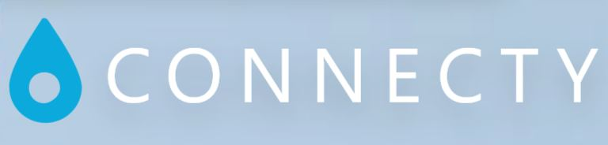

Works
See more personal detailed project at my Github and personal sound work at my SoundCloud . Every project has room to be bigger and better.
Multi-platform Game (SIGONO):
OPUS: Echo of Starsong
- Development information
- Developed by: SIGONO
- Team size: 20 developers
- Release date: 2021
- Engine: Unity
- Platform: PC / Mac
- Overview: An epic space opera awaits.
- Role - Lead Programmer: All technical issues and development.
Multi-platform Game (SIGONO):
Rocket of Whispers: Prologue
- Development information
- Developed by: SIGONO
- Team size: 6 developers
- Release date: 2018/9/13
- Engine: Unity
- Platform: PC / Mac / iOS / Android
- Overview: A new approach to tell stories in 3D world. Mainly focus on minimizing the gap between gameplay and cutscene.
- Role - Lead Programmer: All technical issues and development.
User interface design:
Connecty
-

- Development information
- Designer: Ian Hsieh
- Development time: 1 week
- Release date: 2017/12/17
- Editor: Adobe XD CC
- Platform: Android / iOS
- Overview: Connecty is a proposed application for getting along with friends near your location. It doesn't only provide chatting function, it also recommends interesting activity around you.
- Role - Designer: Made an interactive prototype.
VR Game (Winking Entertainment):
Unearthing Mars
- Development information
- Developed by: WinkingVR
- Team size: 20 developers
- Development time: 1 year
- Release date: 2017/1/17
- Engine: Unreal Engine 4
- Platform: PSVR / Oculus Rift / HTC Vive
- Overview: An VR experience of exploring the space and unknown. The biggest achievement is to avoid common VR sickness.
- Role - System programmer: TRC violations avoiding and VR hardware experience optimizing.
Unannounced Game (Winking Entertainment)
Unannounced Title
- Development information
- Engine: Unreal Engine 4
- Role - Game programmer / Level Designer: Game logic/flow design and implementation, designing levels and interactive sound/music design.
GameMaker Game:
Resurrection
- Development information
- Developed by: NCU CSIE
- Team size: 2 developers
- Development time: 2 weeks
- Release date: 2015/5/30
- Engine: GameMaker 8
- Platform: PC
- Overview: A stealth adventure game based on a fiction near-future story. This work will mainly focus on user interface, a final project in a college UI course.
- Role - Game Designer: Gameplay defining, work scheduling and UI optimizing.
Java little game:
Project Snake
- Development information
- Developed by: Ian Hsieh
- Team size: 1 developer
- Development time: 1 week
- Release date: 2013/5/30
- Language: Java
- Platform: All Java compatible platforms
- Overview: An experimental, simple & classic Snake game. This was the time I started to love enhancing the core gameplay with story performance.
- Role - Game Designer: Level flow design, balance optimizing and story writing.
Music research:
Emotion classification of Japanese songs
- Development information
- Developed by: Ian Hsieh
- Team size: 1 developer
- Development time: 15 week
- Release date: 2015/6/7
- Language: C#
- Platform: PC
- Overview: A research-oriented project in college based on Natural Language Processing and Machine Learning approaches.
- Role - Programmer: Approach defining, research application maximizing and system implementing.
Interactive Music project:
Vertical music transition via trigger
- Development information
- Developed by: Ian Hsieh
- Team size: 1 developer
- Development time: 1 week
- Release date: 2017/7/2
- Engine: Unreal Engine 4
- Platform: PC
- What is Interactive Music?
- Overview: An experimental project to enhance auditory experience by Wwise plugin. It's still expanding new features.
- Role - Designer/Programmer: Designing and implementing
Unannounced UE4 project:
Mobius Beat
- Development information
- Developed by: Ian Hsieh
- Team size: 1 developer
- Development time: ? week
- Release date: Unknown
- Engine: Unreal Engine 4
- Platform: Unknown
- Overview : This is a personal project I am currently working on. It will be a third-person action adventure game without lethal force.
- Role - Game Designer: Defining gameplay, level flow designing